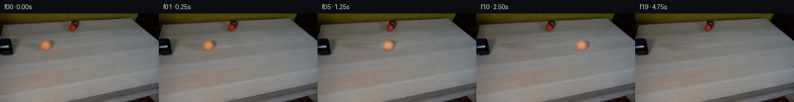

![首帧]()

Round 00
2026-11-04T19:35:44.245464+00:00像素候选变化代码 +137/−0inspection 更新
pixels e1e5d48fad526972 · code ab2703a2170b20b9
查看本轮 generate.py 真实 diff
--- previous/generate.py
+++ current/generate.py
@@ -0,0 +1,137 @@
+#!/usr/bin/env python3
+"""Generate the 20-frame locked-off rolling-ball continuation."""
+
+from pathlib import Path
+
+import cv2
+import numpy as np
+from PIL import Image, ImageDraw
+
+import artifact_io
+
+
+ROOT = Path(__file__).resolve().parent
+CENTERS_X = [74, 80, 87, 95, 104, 114, 124, 135, 146, 158,
+ 170, 182, 194, 206, 217, 227, 238, 248, 258, 268]
+CENTER_Y = 51
+
+
+def smooth_union_mask(height: int, width: int) -> np.ndarray:
+ """Soft mask covering the photographed ball and its attached shadow."""
+ yy, xx = np.mgrid[:height, :width].astype(np.float32)
+
+ # The first ellipse covers the orange body. The second, wider ellipse
+ # covers the compact dark contact/cast shadow to its right.
+ d_body = np.sqrt(((xx - 74.0) / 14.5) ** 2 + ((yy - 51.5) / 12.5) ** 2)
+ d_shadow = np.sqrt(((xx - 86.5) / 20.0) ** 2 + ((yy - 51.0) / 14.0) ** 2)
+ distance = np.minimum(d_body, d_shadow)
+
+ # Solid in the occluded interior, then a cosine-feathered perimeter.
+ u = np.clip((distance - 0.78) / 0.32, 0.0, 1.0)
+ alpha = 0.5 + 0.5 * np.cos(np.pi * u)
+ alpha[distance >= 1.10] = 0.0
+ return alpha.astype(np.float32)
+
+
+def restore_occluded_table(source: np.ndarray, alpha: np.ndarray) -> np.ndarray:
+ """Estimate the wood hidden under the source ball using rowwise grain."""
+ h, w, _ = source.shape
+ src = source.astype(np.float32)
+ estimate = src.copy()
+
+ # Wood bands run almost horizontally in this area. Per-row color samples
+ # immediately to either side retain those bands and interpolate the mild
+ # left-to-right illumination change through the occluded patch.
+ left = src[:, 50:58].mean(axis=1)
+ right = src[:, 108:116].mean(axis=1)
+ for x in range(w):
+ mix = np.clip((x - 57.0) / 52.0, 0.0, 1.0)
+ estimate[:, x] = left * (1.0 - mix) + right * mix
+
+ # Restore a little local photographic grain without reintroducing the
+ # ball: use high-frequency detail from the clean band 34 px to the right.
+ smooth = cv2.GaussianBlur(src, (0, 0), 1.4)
+ detail = src - smooth
+ shifted_detail = np.zeros_like(detail)
+ shifted_detail[:, :w - 34] = detail[:, 34:]
+ estimate += 0.55 * shifted_detail
+
+ a = alpha[..., None]
+ restored = src * (1.0 - a) + estimate * a
+ return np.clip(restored, 0, 255).astype(np.float32)
+
+
+def translate_residual(residual: np.ndarray, dx: float, dy: float) -> np.ndarray:
+ """Subpixel-safe translation, clipped naturally at frame boundaries."""
+ matrix = np.float32([[1.0, 0.0, dx], [0.0, 1.0, dy]])
+ return cv2.warpAffine(
+ residual,
+ matrix,
+ (residual.shape[1], residual.shape[0]),
+ flags=cv2.INTER_LINEAR,
+ borderMode=cv2.BORDER_CONSTANT,
+ borderValue=(0.0, 0.0, 0.0),
+ )
+
+
+def make_transition_check(frames: np.ndarray) -> None:
+ """Save adjacent-frame difference views for motion/lock inspection."""
+ picks = [(0, 1), (5, 6), (10, 11), (15, 16), (18, 19)]
+ canvas = Image.new("RGB", (256 * len(picks), 190), (24, 27, 33))
+ draw = ImageDraw.Draw(canvas)
+ for column, (a, b) in enumerate(picks):
+ diff = np.abs(frames[b].astype(np.int16) - frames[a].astype(np.int16))
+ # Brightened absolute RGB difference: static areas remain black.
+ view = np.clip(diff * 4, 0, 255).astype(np.uint8)
+ canvas.paste(Image.fromarray(view), (column * 256, 26))
+ draw.text((column * 256 + 5, 6), f"{a:02d} -> {b:02d} |delta| x4", fill="white")
… diff truncated; 50 more lines …